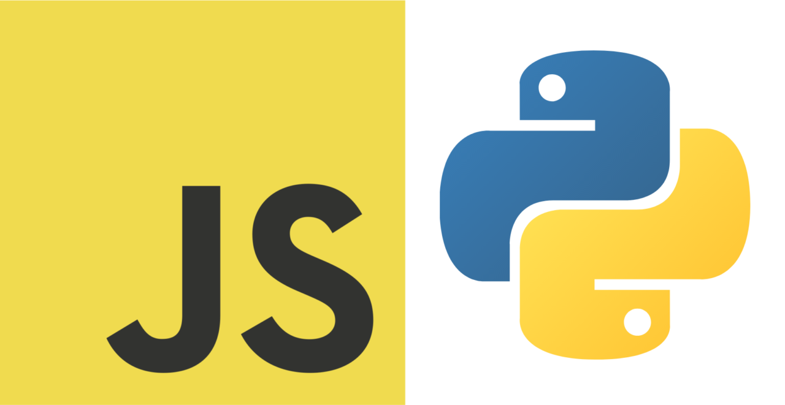

Prática do básico de JavaScript
Data: 22/03/2026
Nesta semana comecei a estudar o básico de JavaScript, para me preparar para o resto da matéria de Desenvolvimento de Aplicações Web. É uma linguagem que eu já conhecia, mas nunca tinha parado para estudar de fato. Pelo menos algumas coisas de Python são "transferíveis" para o JavaScript.
